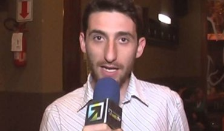
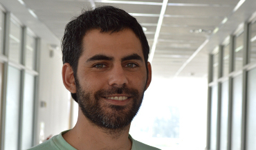
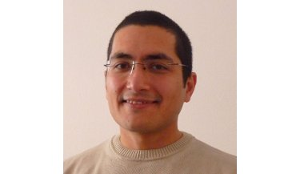
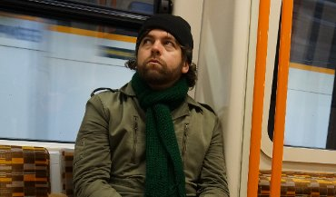
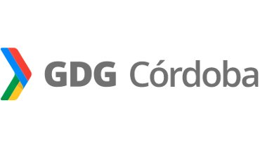
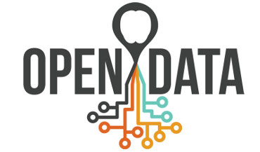

19:00 Bienvenida y Apertura
19:10 La televisión: una ventana al Big Data
+
Jorge Sánchez
19:40 Datos Preciosos: relevamiento geolocalizado y validación colaborativa
Martín Gaitán
+ Pablo Celayes
20:15 ¿Qué es Data Science? Actividad de integración y debate.
Speakers

Diego Lis:
Programador y emprendedor. Desde muy joven desarrolla emprendimientos tecnológicos en seguros y otras áreas. Es egresado y docente de FaMAF en la carrera de Licenciatura en Ciencias de la Computación. Actualmente, es CTO de Infoxel, una startup cordobesa que provee una plataforma web para monitorear en tiempo real la publicidad en televisión, radio y diarios, en varios países de la región. Es miembro de la Fundación Logosófica Argentina desde el año 2001

Martín Gaitán
Ingeniero en Computación por la Universidad Nacional de Córdoba (2011).
Socio fundador de Phasety, emprendimiento incubado en la UNC que desarrolla software especializado para la industria del petróleo y el gas.
Pythonista desde hace casi una década, es especialista en el framework web Django y le gusta creer que entiende algo de software científico.
Es frecuente orador en eventos de software libre. Hincha de Boca y fundamentalista del locro

Jorge Sanchez
obtuvo el título de Ing. en Electrónica en la UTN Córdoba y el de Dr. en Ciencias de la Ingeniería en la FCEFyN de la UNC. Luego de un posdoc en la FaMAF y de algunas estadías en el exterior, fue designado en la categoría de Investigador Asistente en CONICET. Su trabajo se ha desarrollado en torno a los problemas de clasificación y búsqueda de imágenes sobre grandes volúmenes de datos y en la aplicación de técnicas de aprendizaje automático al análisis de imágenes y video. Ha colaborado con empresas del sector en el desarrollo de proyectos avanzados relacionados al análisis de de imágenes

Pablo Celayes
Licenciado en Matemática (2006) y Analista en Computación (2014) egresado de FaMAF, UNC.
Pythonista científico nómade desde 2012, ha participado en numerosos proyectos relacionados a Aprendizaje Automático, Procesamiento de Lenguaje Natural , Análisis de Datos y Criptografía, para clientes e instituciones de Holanda, Turquía, Estados Unidos y Argentina.
Fundador y coordinador desde 2009 de LaAcademiaMateClub, un espacio de divulgación y entrenamiento para jóvenes aficionad@s a la matemática.
Miembro de OpenData Córdoba y participante de cuanto hackatón encuentre.
Cuando suelta la laptop, entretiene los dedos tocando el bajo
Organizan
Data Science Córdoba
Grupo de Data Science Córdoba.

GDG Córdoba
Google Developers Group Córdoba

OpenDataCordoba
Open Data Córdoba
Nos ayudan
Google

FAMAF
GoSur
{kind=link}
{kind=link}
{kind=link}
{kind=link}